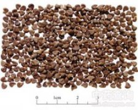

苘麻子

拼音
Qǐnɡ Má Zi
别名
青麻子、野棉花子、白麻子
来源
本品为锦葵科植物苘麻Abutilon theophrastii Medic. 的干燥成熟种子。秋季采收成熟果实，晒干，打下种子，除去杂质。
生境分布
常见于路旁、荒地和田野间。我国除青藏高原不产外，其他各地均产，东北各地也有栽培。
药材特点
苘麻 一年生亚灌木状草本，高达1-2m。茎枝被柔毛。叶互生；叶柄长3-12cm，被星状细柔毛；托叶早落；叶片圆心形，长5-10cm，先端长渐尖，基部心形，两面均被星状柔毛，边缘具细圆锯齿。花单生于叶腋，花梗长1-3cm，被柔毛，近顶端具节；花萼杯状，密被短绒毛，裂片5，卵形，长约6mm；花黄色，花瓣倒卵形，长约1cm；雄蕊柱平滑无毛；心皮15-20，长1-1.5cm，先端平截，具扩展、被毛的长芒2，排列成轮状，密被软毛。蒴果半球形，直径约2cm，长约1.2cm，分果丬15-20，被粗毛，顶端具长芒2。种子肾形，褐色，被星状柔毛。花期7-8月。
性状
本品呈三角状肾形，长3.5～6mm，宽2.5～4.5mm，厚1～2mm。表面灰黑色或暗褐色，有白色稀疏绒毛，凹陷处有类椭圆状种脐，淡棕色，四周有放射状细纹。种皮坚硬，子叶2，重叠折曲，富油性。气微，味淡。
性味
苦，平。
功能主治
清热利湿，解毒，退翳。用于赤白痢疾，淋病涩痛，痈肿,目翳。
用法用量
3～9g。
化学成分
含油15%-17%，其中58%为亚油酸。
药理作用
1：无药理作用数据
摘录
《中国药典》